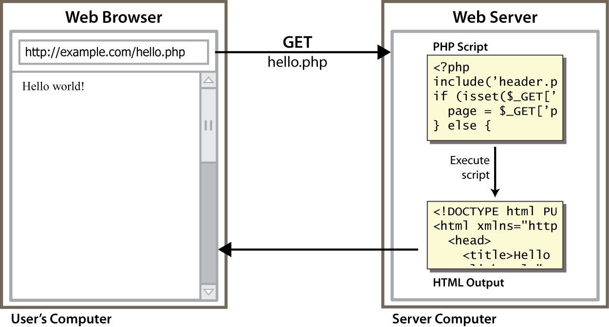

TÉCNICAS ATUAIS EM
DESENVOLVIMENTO DE
SOFTWARE
Server-Side: O Básico
URLs e servidores web
http://server/path/file
- Normalmente quando você digita uma URL no seu navegador:
- • seu computador procura o endereço IP do servidor usando DNS
- • o navegador conecta àquele IP e requisita o arquivo necessário
- • o programa do servidor web (e.x. Apache) pega o arquivo do servidor local, e envia o conteúdo para você
- algumas URLs na verdade especificam programas que o servidor web deve rodar e então enviar a saída de volta para você como resultado:
http://intranet.viannajr.edu.br/login_aluno.php
- a URL acima diz para o servidor
intranet.viannajr.edu.brrodar o programalogin_aluno.phpe enviar o seu resultado.
Programação Web do lado-servidor

- as páginas dos programas server-side são escritas usando uma das muitas linguagens/frameworks de programação Web:
O servidor web contêm o programa que permite rodar estes códigos e enviar a saída como resposta às requisições web.
Cada linguagem/framework tem os seus prós e seus contras.
História do PHP
O que é PHP?

- PHP é um acrônimo recursivo para "PHP Hypertext Preprocessor":
- • Linguagem de script open source (server-side)
- usado para criar páginas web dinâmicas:
- ▸ fornece conteúdo diferente dependendo do contexto
- ▸ interface com outros serviços: banco de dados, e-mail, etc
- ▸ autenticação de usuários
- ▸ processamento de formulários
O código PHP pode ser embutido em um código XHTML
Ciclo de vida de uma requisição PHP

▸ browser requisita um arquivo.html(conteúdo estático): servidor simplesmente envia o arquivo
▸ browser requisita um arquivo.php(conteúdo dinâmico): servidor lê o arquivo, roda o script dentro dele, envia o resultado através da rede.
Como surgiu?
-
Criado em 1994 pelo americano Rasmus Lerdorf.
- Originalmente usado para acompanhamento de visitas para seu currículo online.
-
Ele nomeou o conjunto de scripts de "Personal Home Page Tools" mais frequentemente referenciado como "PHP Tools" esse conjunto foi reformulado e disponibilizado em 1995 como "PHP/FI"
-
PHP 3
-
PHP 3.0 foi a primeira versão que se assemelha com o PHP como existe hoje.
-
Um dos maiores pontos fortes do PHP 3.0 foram os fortes recursos de extensibilidade.
-
Outro recurso chave foi introduzido no PHP 3.0 incluindo o suporte a programação orientada a objeto.
-
PHP 4
-
No inverno de 1998, logo após o PHP 3.0 ter sido oficialmente lançado, Andi Gutmans e Zeev Suraski começaram a trabalhar em uma reescrita do core do PHP.
-
Os objetivos do projeto eram melhorar performance das aplicações complexas, e melhorar a modularização do código base do PHP.
-
Além da melhoria da performance nesta versão, o PHP 4.0 incluiu outros recursos chaves, tais como suporte para maioria dos servidores web, sessões HTTP, saídas de buffering, mais maneiras seguras para manipular dados de entrada de usuários e diversas novas construções de linguagem.
-
PHP 5
-
Com um novo núcleo o PHP 5 foi lançado em Julho de 2004 após um longo desenvolvimento e vários pré-lançamentos.
-
Sua ultima versão é a PHP 5.6.11 lançada em 10/07/15 e pode ser utilizada até hoje
-
PHP 6
-
Em 2005, um projeto foi iniciado para trazer suporte UNICODE ao PHP através da incorporação da biblioteca UCI
-
Uma vez que isso causaria grandes mudanças tanto no código fonte como para o usuário, foi planejado lançá-la na versão 6.0 em conjunto com outros importantes recursos, então em desenvolvimento, em vez da 5.5
-
Entretanto, devido a falta de desenvolvedores que entendessem as mudanças necessárias e problemas de desempenho decorrentes da conversão para UTF-16, que raramente é usado em um contexto web o PHP 5.3 foi lançado em 2009, sem total suporte ao Unicode, mas contendo algumas das novidades que seriam lançadas no PHP 6.0.
- Durante os anos, antes do lançamento do PHP 5.3 e 5.4, alguns livros foram publicados com base no conjunto de recursos esperado de PHP 6.0
-
PHP 7
-
O PHP 7.0.0 foi lançado em 03 de dezembro de 2015 e atualmente está em sua versão 7.4.27(16/12/2021).
- A performance do PHP 7 em relação ao 5 aumentou em torno de 10–25%
- Remoção dos Construtores do PHP 4;
-
Novos operadores
<=>e?? - Declaração do Tipo de Retorno
- ...
-
PHP 8
-
O PHP 8.0.0 foi lançado em 26 de novembro de 2020 e atualmente está em sua versão 8.1.2(20/01/2022).
-
A grande novidade é o Compilador JIT (Just in Time)
Com o JIT, algumas operações não precisarão ser interpretados pela ZendVM, pois, essas instruções serão executadas diretamente a nível de CPU. -
O desempenho do PHP 8 é mais de 4 vezes superior ao PHP 7.4
- Além disso temos mudanças no método Construtor e algumas outras melhorias que discutiremos ao longo do curso
Porque PHP?
Existem muitas outras linguagens para web: Ruby on Rails, JSP, ASP.NET, etc. Por que escolher PHP?
- ⇒ free e open source: qualquer um pode rodar um servidor PHP sem pagar
- ⇒ compativel: suportado pelos servidores web mais populares
- ⇒ simples: muitas facilidades já implementadas; sintax familiar
- ⇒ mercado: uma das lingagens mais utilizadas nos dias atuais
RedMonk
- JavaScript
- Java
- PHP
- Python
- C#
- C++
- Ruby
- CSS
- C
- Objective-C
Jobs Tractor
- Java
- Objective-C
- PHP
- SQL
- Java (Android)
- C#
- JavaScript
- Python
- Ruby
- C++
GitHut
- JavaScript
- Java
- Python
- CSS
- PHP
- Ruby
- C++
- C
- Shell
- C#